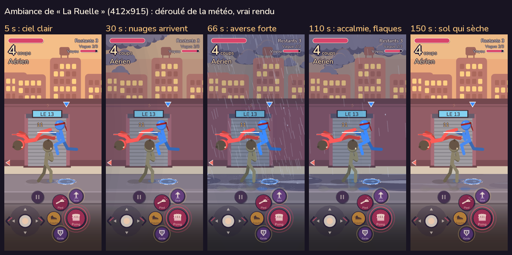

Pluie de « La Ruelle » : le son
Aucun son nouveau : l'étage réutilise la boucle de pluie existante (légère, longue, volume bas, décision déjà validée). Elle suit maintenant la pluie AFFICHÉE de l'étage : elle monte avec l'averse (vers 44 s), reste pendant l'averse forte, puis s'efface à l'accalmie, avec le fondu lent de l'ambiance (environ 2 s).
Écouté par : personne (à écouter en jeu : labo de l'étage, averse vers 44 s).
Ce qu'on voit pendant ce son :
